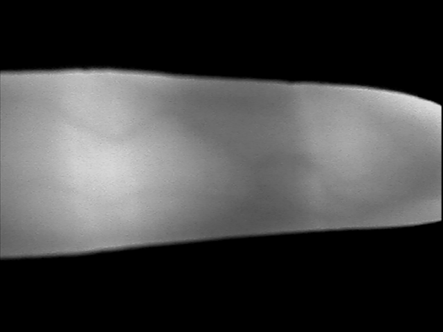

Projekt: Extrakce krevního řečiště prstu za pomoci deterministických algoritmů
Popis projektu
Tento projekt se zaměřuje na extrakci vzorů žil z fotografií ruky. Cílem je využít moderní techniky zpracování obrazu k identifikaci žilních vzorců pro účely biometrie. Náš systém je založen na metodě **Maximum Curvature** pro extrakci vzorců žil. Dále tento systém detekuje a analyzuje klíčové rysy jako bifurkace, průsečíky, koncové body a lokální histogramy. K tomu se používá technika porovnání a vyhodnocení pomocí **overlapu** a výkonnosti systému pomocí **ROC křivky**.
Výsledky projektu
Původní obrázek prstu
Původní obraz ruky.
Extrahovaný vzor žil

Extrahovaný vzor žil na základě metody Maximum Curvature.
Bifurkace a křížení ve vzoru žil

Zobrazení detekovaných bifurkací a křížení v extrahovaném vzoru žil.
Analýza rysů a výkonnost systému
Systém využívá metodu **Maximum Curvature** pro extrakci žilních vzorců. Na základě těchto vzorců jsou následně detekovány klíčové rysy:
- Bifurkace: Místa, kde se žíly rozdvojují.
- Křížení: Body, kde se žíly kříží.
- Koncové body: Místa, kde žíly končí.
- Lokální histogramy: Histogramy, které poskytují informace o textuře a kontrastu vzoru žil.
Tyto rysy jsou v případě srovnání dvou různých obrazů porovnávány a vyhodnocovány, dále je vyhodnocen i překryv dvou srovnávaných obrazů. Výsledné skóre porovnání je normalizováno do intervalu <0, 100>, kde 0 je perfektní shoda.
Vyhodnocení výkonnosti

ROC křivka ukazující výkonnost systému při detekci žilních vzorců.